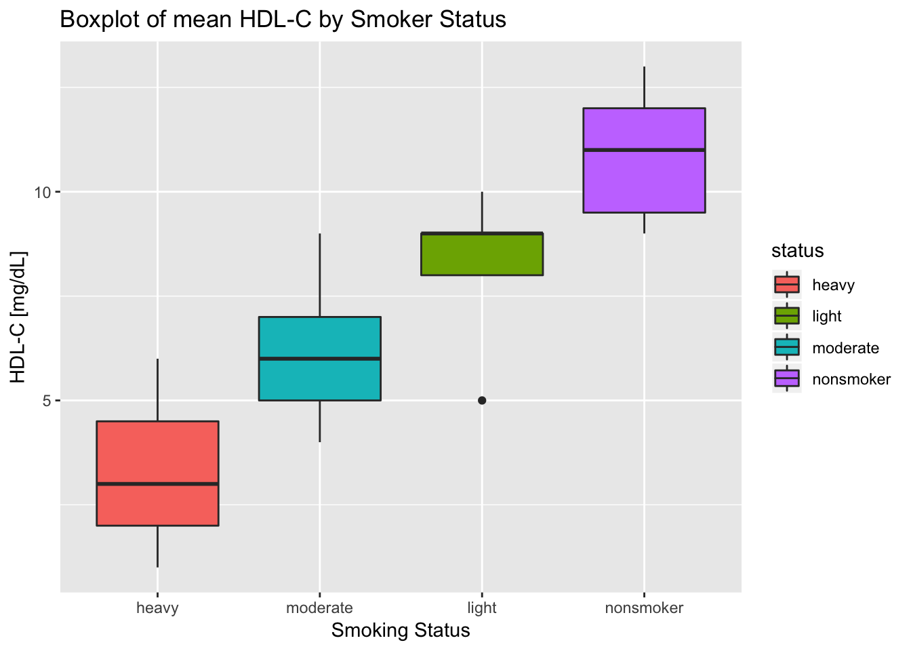
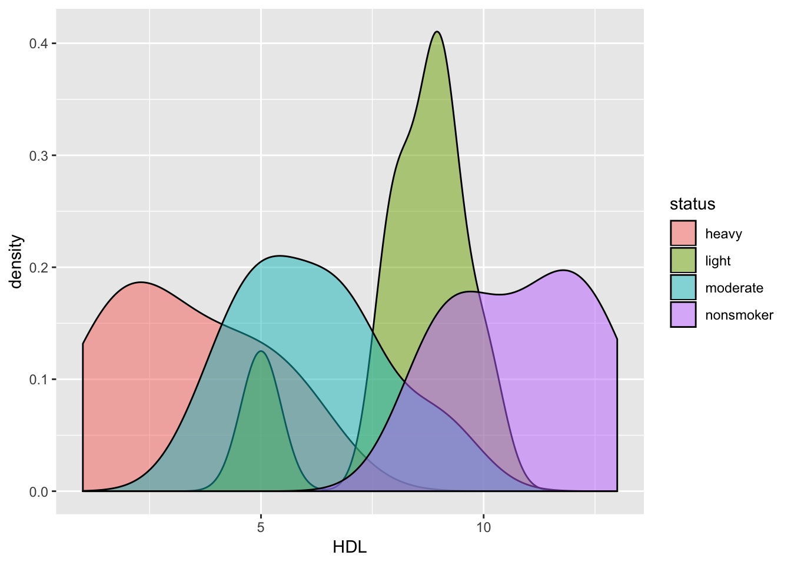

This tutorial provides an introduction to the analysis of variance (ANOVA). The data set we will use contains serum concentrations of high-density lipoprotein cholesterol (HDL-C) from samples of adult males who are non-smokers, light smokers, moderate smokers, and heavy smokers. We will assess whether these data provide sufficient evidence to indicate that the four populations differ with respect to mean serum concentration of HDL-C.
Data sets and Rmarkdown files are available at: https://github.com/aaroncoyner/biostats-tutorials
This tutorial was adapted from Amber Lin's tutorials for PHPM 524: Introduction to Biostatistics at Oregon Health & Science University.
The template used for this tutorial is from Alison Presmanes-Hill
Do this once per machine.
install.packages('readr')
install.packages('tidyverse')
install.packages('skimr')Do this once per R session.
library(readr)
library(tidyverse)
library(skimr)smoker_hdl.csv to an easily accessible locationread_csv() from the readr package to import the csvread_csv() is the url or path to the dataset<- and call that object something simple like smokersmoker <- read_csv('data/smoker_hdl.csv')Use the head() function in your console to briefly check the structure of the data set.
head(smoker)# A tibble: 6 x 2
status HDL
<chr> <int>
1 nonsmoker 12
2 nonsmoker 10
3 nonsmoker 11
4 nonsmoker 13
5 nonsmoker 9
6 nonsmoker 9head() shows us that the data set contains individual observations for each subject per row. So, before we use skim() to compute summary statistics, we need to organize these data by group, where group is the person's smoking status. Then we can examine the mean, standard deviation, and quartiles for each variable, plus get some mini-histograms using skim().
smoker %>%
group_by(status) %>%
skim()Skim summary statistics
n obs: 28
n variables: 2
group variables: status
── Variable type:integer ────────────────────────────────────────────────────────────
status variable missing complete n mean sd p0 p25 p50 p75 p100
heavy HDL 0 7 7 3.29 1.8 1 2 3 4.5 6
light HDL 0 7 7 8.29 1.6 5 8 9 9 10
moderate HDL 0 7 7 6.14 1.68 4 5 6 7 9
nonsmoker HDL 0 7 7 10.86 1.57 9 9.5 11 12 13
hist
▃▇▁▃▃▁▃▃
▂▁▁▁▅▁▇▂
▃▇▁▃▇▁▁▃
▇▃▁▃▁▇▁▃Looking at the summary statistics for this data set, namely the mean and standard error for each group, we can see that there does appear to be a difference between means. But we need to show this statistically.
We can also examine box plots of this data. Box plots show the 25th percentile (bottom of the box), median (middle line), and 75th percentile (top of the box). The "whiskers" represent variability outside the upper and lower quartiles, and individual dots represent outliers. It's a good way of showing the distribution and the skewness of the data. Again, it appears that there is a difference between groups, but we still need to confirm this statistically!
ggplot(smoker, aes(x = reorder(status, HDL, median), y = HDL, fill = status)) +
geom_boxplot() +
ggtitle('Boxplot of mean HDL-C by Smoker Status') +
xlab('Smoking Status') +
ylab('HDL-C [mg/dL]')
NOTE: x = reorder(status, HDL, median) simply tells R that we wish to have our x-axis be status, but to order groups by the values of the medians of HDL. Also, note that there is an outlier in the light group.
Let's also examine a density estimation plot (it's similar to a histogram of the raw data). From ?geom_density:
"Computes and draws kernel density estimate, which is a smoothed version of the histogram. This is a useful alternative to the histogram for continuous data that comes from an underlying smooth distribution."
Rather than plotting each density curve on a separate plot, we overlay them so we can examine to what degree they differ. So that we can see curves that are potentially hidden by others, we set alpha equal to 0.5 (0: transparent, 1: opaque).
ggplot(smoker, aes(x = HDL, fill = status)) +
geom_density(alpha = 0.5)
Again, it appears that these data have different means, but we still need to confirm this statistically!
So, let's perform a one-way ANOVA to test whether the mean HDL-C levels are affected by a person's smoking status.
anova_results <- aov(HDL ~ status, data = smoker)
summary(anova_results) Df Sum Sq Mean Sq F value Pr(>F)
status 3 216.86 72.29 26.06 1.01e-07 ***
Residuals 24 66.57 2.77
---
Signif. codes: 0 '***' 0.001 '**' 0.01 '*' 0.05 '.' 0.1 ' ' 1The F-test is highly significant (\(p=1.01 *e^{-07}\)), meaning that at least one group’s mean HDL is significantly different from the others'. Performing post-hoc tests will help determine where the group differences lie. Here we calculate pairwise comparisons between group levels using Bonferroni's correction for multiple testing.
pairwise.t.test(smoker$HDL, smoker$status, p.adjust = "bonferroni")
Pairwise comparisons using t tests with pooled SD
data: smoker$HDL and smoker$status
heavy light moderate
light 5.3e-05 - -
moderate 0.02252 0.14480 -
nonsmoker 6.3e-08 0.04845 0.00012
P value adjustment method: bonferroni The results show that the difference in mean HDL is not significantly different between light and moderate smokers (\(p=0.14480\)), however the differences between all other groups is significantly different (\(p<0.05\)).
Another multiple comparisons procedure we can use is Tukey's Honest Significance Test (HSD). The function TukeyHSD() creates a set of confidence intervals on the differences between means with the specified family-wise probability of coverage.
TukeyHSD(anova_results) Tukey multiple comparisons of means
95% family-wise confidence level
Fit: aov(formula = HDL ~ status, data = smoker)
$status
diff lwr upr p adj
light-heavy 5.000000 2.5441920 7.4558080 0.0000494
moderate-heavy 2.857143 0.4013349 5.3129509 0.0183649
nonsmoker-heavy 7.571429 5.1156206 10.0272366 0.0000001
moderate-light -2.142857 -4.5986651 0.3129509 0.1026873
nonsmoker-light 2.571429 0.1156206 5.0272366 0.0377658
nonsmoker-moderate 4.714286 2.2584777 7.1700937 0.0001096The results of this test confirm the results of the previous test — there is not a significant difference between the means of HDL for light and moderate smokers (\(p \ge 0.05\)), but all other groups are significantly different (\(p<0.05\)).
© 2018 Aaron Coyner. All rights reserved.